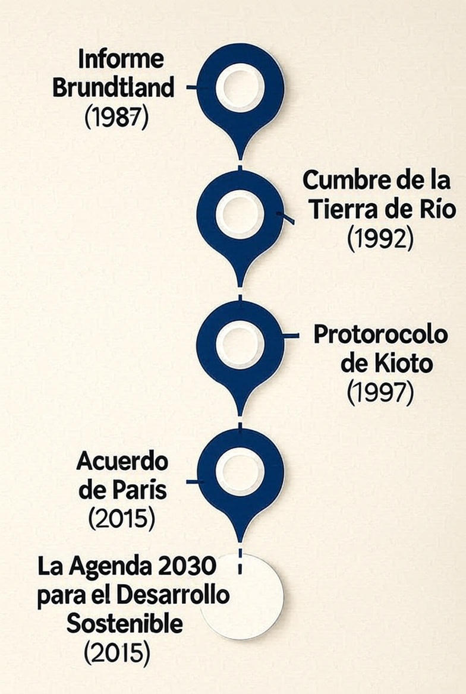

El concepto de desarrollo sostenible no es solo una idea; se ha formalizado a través de acuerdos y marcos globales que guían a los países y a las empresas. Algunos de los más importantes son:
- Informe Brundtland (1987): Como mencionamos, fue el punto de partida que popularizó el término "desarrollo sostenible".
- Cumbre de la Tierra de Río (1992): Estableció la Convención Marco de las Naciones Unidas sobre el Cambio Climático (CMNUCC), un tratado fundamental para abordar el calentamiento global.
- Protocolo de Kioto (1997): Fue el primer acuerdo internacional que estableció objetivos legalmente vinculantes para que los países industrializados redujeran sus emisiones de gases de efecto invernadero.
- Acuerdo de París (2015): Un hito histórico donde casi todos los países del mundo se comprometieron a mantener el aumento de la temperatura media mundial "muy por debajo de 2 °C" con respecto a los niveles preindustriales.
- La Agenda 2030 para el Desarrollo Sostenible (2015): El marco más relevante en la actualidad, que presenta un plan de acción global a favor de las personas, el planeta y la prosperidad.
